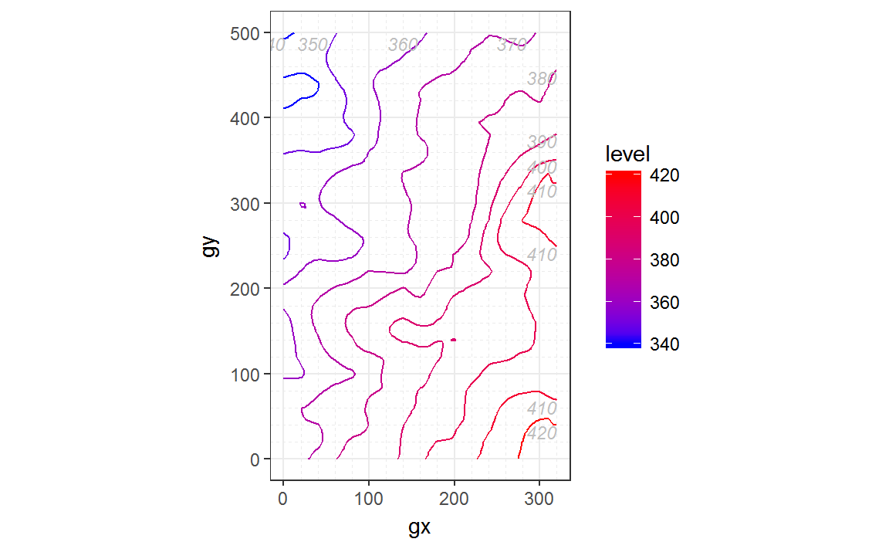
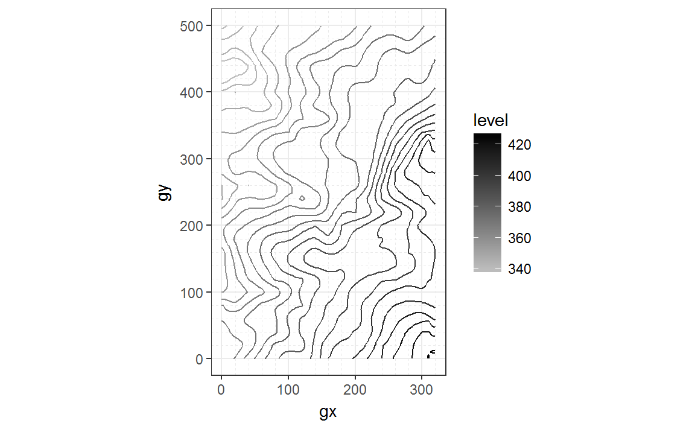
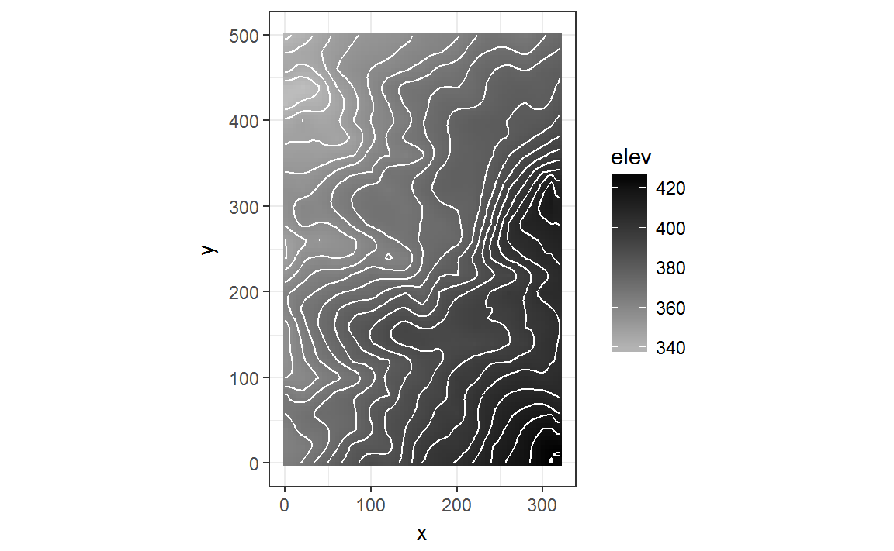

vignettes/compare_ggplot2.Rmd
compare_ggplot2.RmdThis article compares plots built with fgeo.map versus ggplot2.
Data
# https://forestgeo.github.io/fgeo.map/
library(fgeo.map)
elevation <- fgeo.data::luquillo_elevation
str(elevation)
#> List of 4
#> $ col :Classes 'tbl_df', 'tbl' and 'data.frame': 6565 obs. of 3 variables:
#> ..$ x : int [1:6565] 0 0 0 0 0 0 0 0 0 0 ...
#> ..$ y : int [1:6565] 0 5 10 15 20 25 30 35 40 45 ...
#> ..$ elev: num [1:6565] 364 364 363 363 363 ...
#> $ mat : num [1:101, 1:65] 364 364 363 363 363 ...
#> $ xdim: int 320
#> $ ydim: int 500
# Pull elevation dataframe
elev <- elevation$colQuick maps with fgeo.map.

# map_elev() also understands the elevation list, so this code outputs the same
map_elev(elevation)# You have a number of options you can tweak
map_elev(elev,
# Or choose colors by code from http://bit.ly/2rJgQba
low = "grey", high = "black",
# How many lines, and how thick
bins = 20, contour_size = 0.5,
# Hide elevation numbers from inside the plot
label_elev = FALSE,
# Keep the "level" legend
hide_legend_color = FALSE
)
More flexible maps with ggplot2.
# http://ggplot2.tidyverse.org/reference/
library(ggplot2)
ggplot(elev, aes(x = x, y = y, z = elev)) +
geom_raster(aes(fill = elev)) +
geom_contour(color = "white", bins = 20) +
scale_fill_gradient(low = "grey", high = "black") +
coord_equal() +
theme_bw()